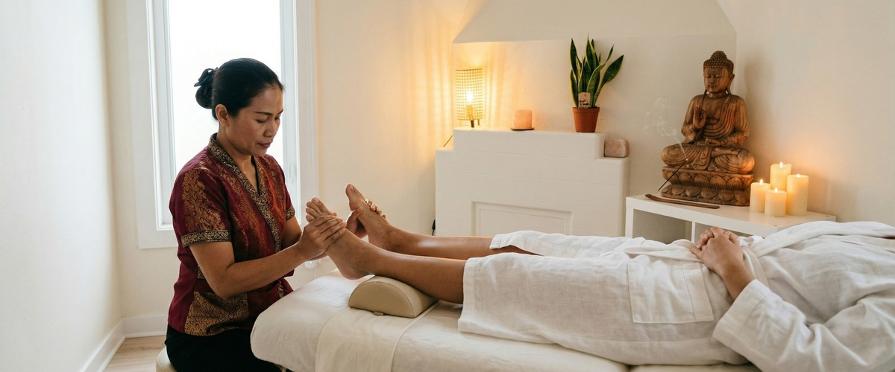
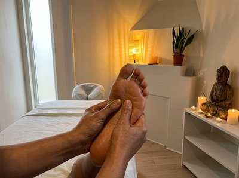
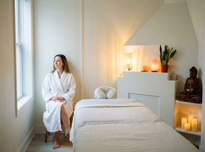

If you're carrying the weight of a difficult week in your body as well as your mind, Thai reflexology in Glasgow offers something most treatments can't: a whole-body response that starts at your feet.

Rooted in centuries of Thai healing tradition, it works on the principle that specific reflex points on the feet, ankles, and lower legs connect to organs and systems throughout the body. Address those points with skill and intention, and the effects travel far beyond where your therapist's hands are working.
Thai reflexology draws on traditional Thai healing and the concept of sen energy lines. It uses precise thumb and hand pressure, along with a traditional Thai massage stick, to stimulate reflex zones across the feet and lower legs.

Your therapist applies rhythmic, targeted pressure to release blockages, boost circulation, and restore balance. It is therapeutic rather than purely relaxing, though most clients find it deeply calming.
Unlike a general foot massage, Thai reflexology follows a structured sequence. It works through every reflex zone in a set order. The result feels grounding and specific, rather than simply soothing.
Thai reflexology suits a wide range of people. It works especially well for Glasgow professionals who spend long hours at a desk, commuters on their feet all day, and anyone dealing with stress, tension headaches, or poor sleep.
If full-body massage feels like too much right now, or you want something focused and restorative, this is a strong starting point. It is also popular with clients who book regularly at Serendipity and want a targeted treatment alongside their usual massage.
You stay fully clothed throughout. You only need to remove your shoes and socks. Your therapist will make sure you are settled before starting with a warm-up of the feet and lower legs.
They then work through a structured sequence of reflex points using thumbs, hands, and a traditional wooden massage stick for precise pressure on specific zones.
Sessions are typically 60 minutes. Pressure can be adjusted from gentle to firm — just tell your therapist what feels right. Most clients leave feeling lighter, clearer, and less tense than when they arrived. You can book your Thai reflexology session online and choose the time that suits you.

At Serendipity Massage Therapy & Wellness on Hope Street, every treatment is delivered by a trained therapist working to a consistent standard. Our techniques are developed and taught in-house by head therapist Jariya Malone.
That means you get the same quality of care every time you visit. We also offer Thai massage, hot stone massage, Swedish massage, and aromatherapy massage for clients who want to explore other treatments.
No. Thai reflexology is a fully clothed treatment. You only need to remove your shoes and socks so your therapist can access your feet, ankles, and lower legs. Everything else stays on, so there is no need to worry about changing or undressing.
Sessions are typically 60 minutes. This allows enough time to work through the full sequence of reflex zones on both feet and lower legs. If you are new to the treatment, a 60-minute session is the ideal starting point.
Most clients leave feeling calmer, lighter, and clearer in their thinking. Some people feel mildly tired for a short while after — this is a normal response as the body settles. Drinking water after your session helps support that process. The sense of wellbeing often carries well into the following day.
For general wellbeing and stress management, once every two to four weeks works well for most people. If you are dealing with ongoing tension, poor sleep, or high stress, more frequent sessions in the first few weeks can help build a stronger baseline. Your therapist can advise on a schedule that fits your needs.
Yes. It is one of the most accessible treatments we offer at Serendipity Massage Therapy & Wellness. You stay fully clothed and the work is focused on the feet and lower legs.
Many first-time clients find it a comfortable and reassuring way into therapeutic massage. Just let your therapist know it is your first session and they will walk you through what to expect.
A regular foot massage aims to relax the muscles of the feet and ease surface tension. Thai reflexology goes further. It uses a structured sequence of pressure on specific reflex zones that connect to systems and organs throughout the body.
A traditional wooden massage stick is used for precision on certain points. The treatment follows the principles of Thai sen energy lines, not general relaxation methods. The effects are felt throughout the whole body, not just the feet.